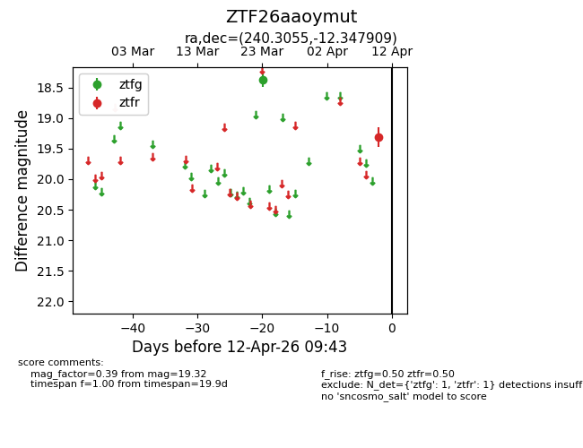
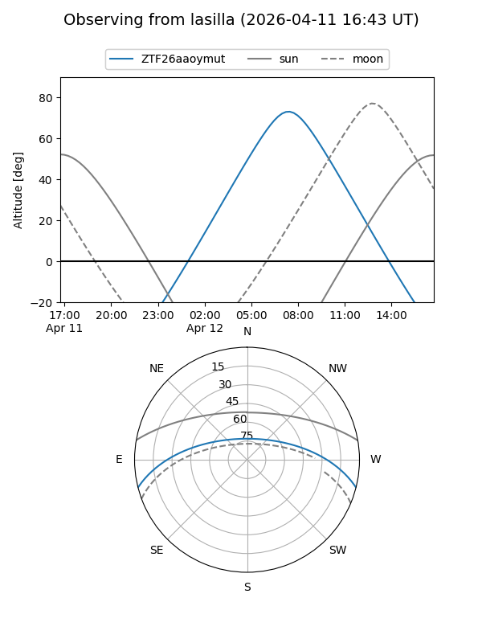
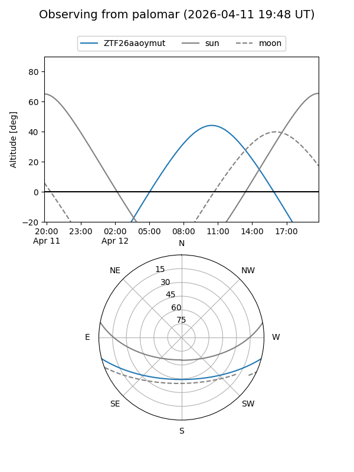

ZTF26aaoymut
Target ZTF26aaoymut at 2026-04-12 09:52
Aliases and brokers:
FINK: link
Lasair: link
ALeRCE: link
alt names
ZTF26aaoymut (ztf,fink_ztf)
Coordinates:
equatorial (ra, dec) = 240.3055,-12.34791
equatorial (HMS+DMS) = 16:01:13.31,-12:20:52.47
galactic (l, b) = (358.5947,+29.37026)
Flags:
Photometry:
last ztfg=18.37, ztfr=19.32
1 ztfg, 1 ztfr detections
Lightcurve

Visibility


Additional plots